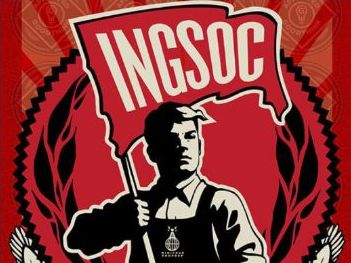
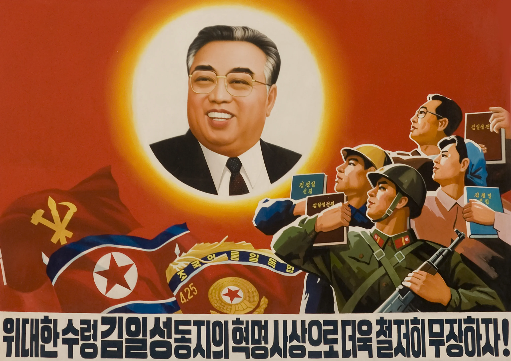

Theme 2 of 5
Propaganda
How does the propaganda spread by Big Brother in 1984 differ from countries today?
In The Book
What The Party Does
- Big Brother posters are hung everywhere, even inside of people's homes
-
Slogans are used to promote their own ideologies
- "War is Peace"
- "Freedom is Slavery"
- "Ignorance is Strength"
- The Two Minutes of Hate are used to brainwash the population to hating the current enemy
Quote
“Big Brother is in- fallible and all-powerful. Every success, every achievement, every victory, every scientific discovery, all knowledge, all wisdom, all happiness, all virtue, are held to issue directly from his leadership and inspiration. Nobody has ever seen Big Brother. He is a face on the hoardings, a voice on the Telescreen.”
(pg 208)
Real Life
Modern Example
- Mass amounts of portraits of North Korea's leaders (Kim Jong Un) are displayed
- Political propaganda, primarily posters, are hung everywhere as cheap means of influencing the people
- The media is influenced, only showing the people what the government wants them to see
